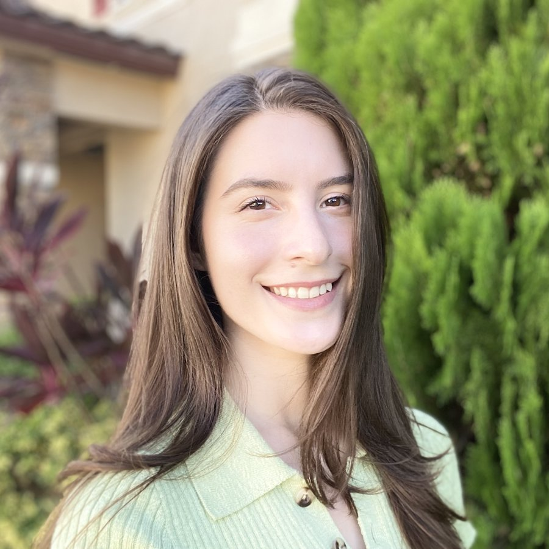

I am a member of the technical staff in the Artificial Intelligence Technology and Systems Group at MIT Lincoln Laboratory, where I have worked since 2024. My work focuses on building robust natural language processing and computer vision systems, and my research interests include the robustness, explainability, and interpretability of machine learning. I also help organize the Synthetic & Adversarial ForEnsics (SAFE) workshop series on synthetic media detection, adversarial robustness, and AI forensics.
I earned my Ph.D. in computer science from Florida International University (FIU) in 2023, where I was advised by Dr. Niki Pissinou and supported by an NSF Graduate Research Fellowship and the GEM Consortium. My doctoral research focused on defenses against adversarial attacks on machine learning models [Ph.D. research]. Before that, I earned a B.S. in computer science and a B.S. in mathematics (2019) and an M.S. in telecommunications and networking (2022) from FIU, and did my first research on reliable data management for mobile wireless sensor networks [undergraduate research].
Zero-Shot Relation Classification with Large Language Models: Binary Prompting and Relevance Elicitation featured paper
Workshop on Automated Knowledge Base Construction at EMNLP (AKBC 2026)
Distill-RE: Few-Shot Relation Extraction via Teacher LLM Reasoning Distillation
Workshop on Automated Knowledge Base Construction at EMNLP (AKBC 2026)
Scalable Cross-Aircraft Flight Phase Classification Using Transfer Learning and ADS-B Data outstanding paper award
IEEE High Performance Extreme Computing Conference (HPEC 2026)